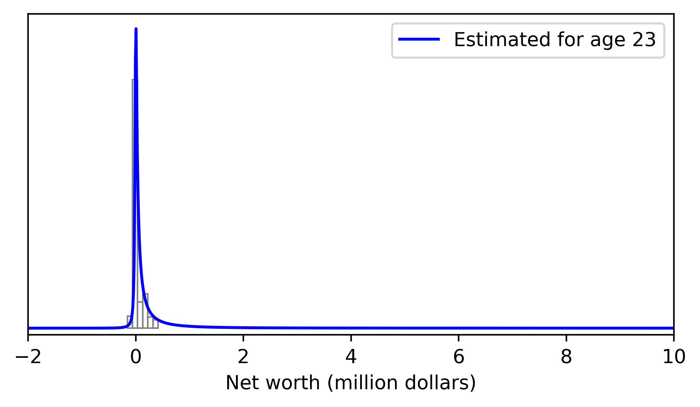
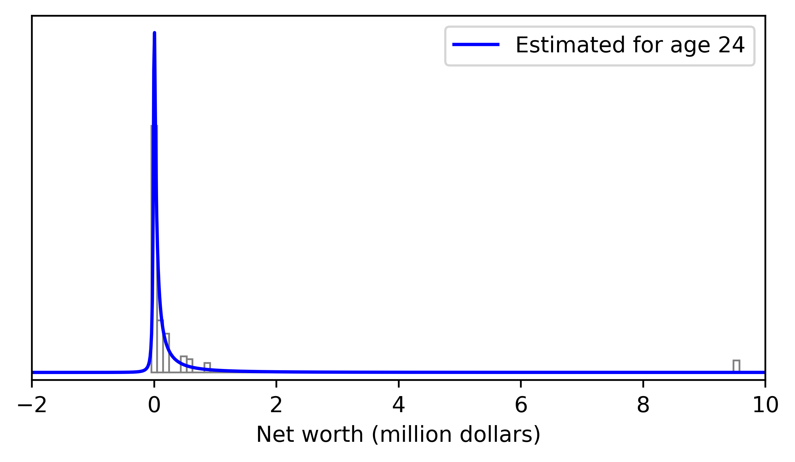
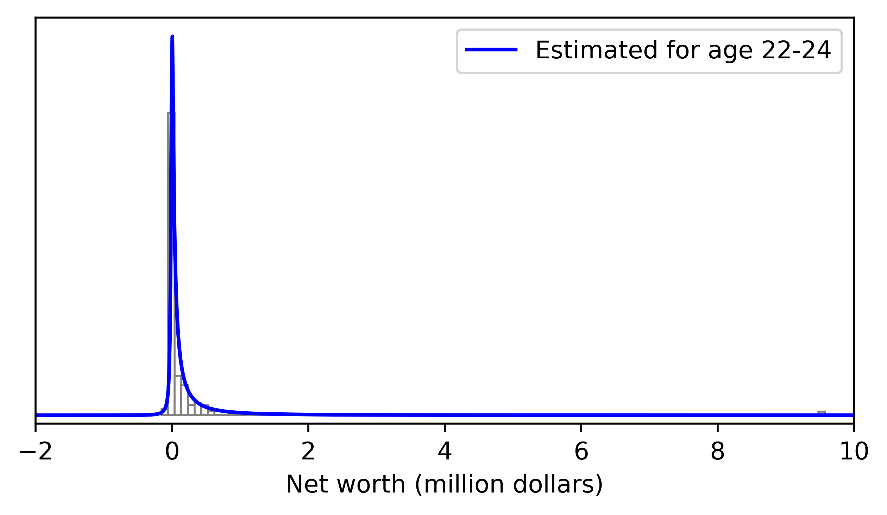
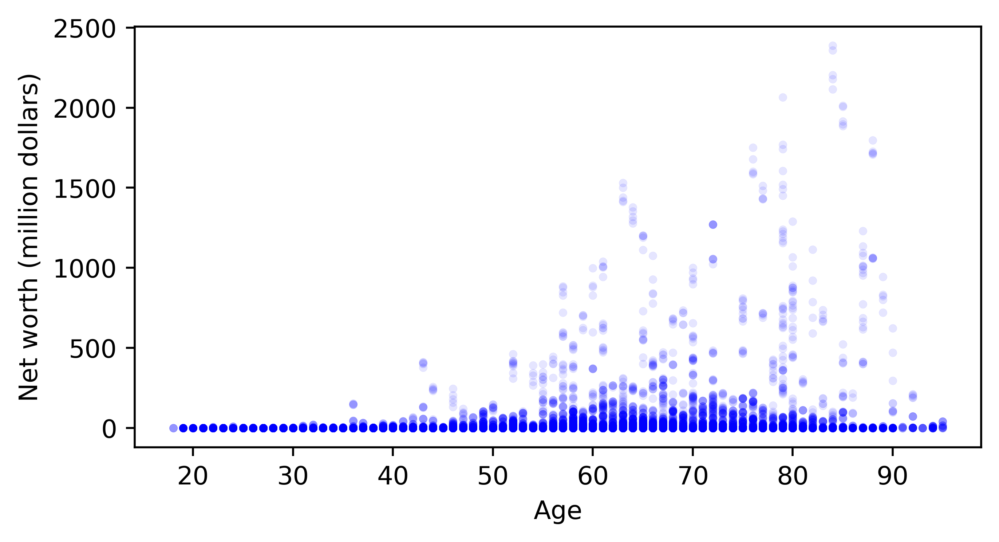
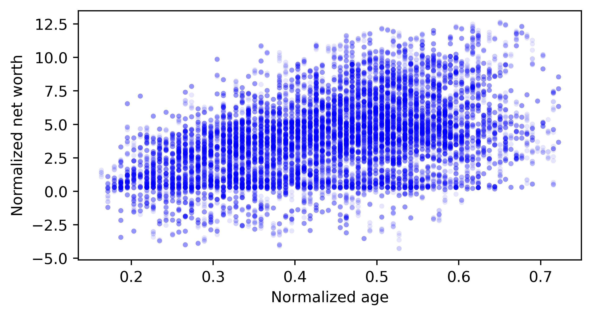

5.2 Bivariate SU Distribution#
1. Functions#
%matplotlib inline
import numpy as np
import pandas as pd
import scipy.optimize as opt
import scipy.stats as st
import matplotlib.pyplot as plt
PDFs#
def SU_pdf(x, m, s, lambda_, theta):
J = 1/(theta*np.sqrt((x-m)**2+s**2))
z = (np.arcsinh((x - m)/s) - lambda_)/theta
pdf_vals = J*st.norm.pdf(z)
return pdf_vals
def SU_bi_pdf(x1, x2, m1, m2, s1, s2, lambda1, lambda2, theta1, theta2, r):
J = 1/( (theta1*np.sqrt((x1-m1)**2+s1**2))*(theta2*np.sqrt((x2-m1)**2+s2**2)) )
z1 = (np.arcsinh((x1 - m1)/s1) - lambda1)/theta1
z2 = (np.arcsinh((x2 - m2)/s2) - lambda2)/theta2
pdf_vals = 1/(2*np.pi*np.sqrt(1-r**2))*J*np.exp(
-1/(2*(1-r**2))*(z1**2+z2**2-2*r*z1*z2))
return pdf_vals
def SU_cond_pdf(x1, x2, m1, m2, s1, s2, lambda1, lambda2, theta1, theta2, r):
'''
Conditional PDF of x1 given x2
'''
lambda1_star = lambda1 + r * theta1/theta2 * (np.arcsinh((x2 - m2) / s2) - lambda2)
theta1_star = theta1 * (1 - r**2)**(1/2)
J = 1/(theta1_star*np.sqrt((x1-m1)**2+s1**2))
z = (np.arcsinh((x1 - m1)/s1) - lambda1_star)/theta1_star
pdf_vals = J*st.norm.pdf(z)
return pdf_vals
Log Likelihood Functions#
s(\(s\))와 theta(\(\theta\))가 항상 양수이기 때문에 최적화 과정에서 이 조건을 부과하기 위해 이들 파라미터에 지수(natural exponential)를 취해서 로그가능도 함수를 만드는 방법을 사용한다. 이렇게 하면 입력 파라미터는 제약(bounding) 조건이 사라지고 모든 실수값을 취할 수 있게 된다.
일변량 단순
def ll_SU_e(x, m, s, lambda_, theta):
s = np.exp(s)
theta = np.exp(theta)
J = 1/(theta*np.sqrt((x-m)**2+s**2))
z = (np.arcsinh((x - m)/s) - lambda_)/theta
ln_pdf_vals = (np.log(J) - 0.5*np.log(2*np.pi) - 0.5*(z)**2)
log_lik_val = ln_pdf_vals.sum()
return log_lik_val
이변량 가중
def weight_ll_bi_SU_e(x1, x2, weight, m1, m2, s1, s2, lambda1, lambda2, theta1, theta2, r):
s1 = np.exp(s1)
theta1 = np.exp(theta1)
s2 = np.exp(s2)
theta2 = np.exp(theta2)
J = 1/( (theta1*np.sqrt((x1-m1)**2+s1**2))*(theta2*np.sqrt((x2-m2)**2+s2**2)) )
z1 = (np.arcsinh((x1 - m1)/s1) - lambda1)/theta1
z2 = (np.arcsinh((x2 - m2)/s2) - lambda2)/theta2
ln_pdf_vals = weight*( np.log(J) - np.log(2*np.pi) - 0.5*np.log(1-r**2)
- 0.5/(1-r**2)*(z1**2+z2**2-2*r*z1*z2) )
log_lik_val = ln_pdf_vals.sum()
return log_lik_val
MLE Objective Functions#
일변량 단순
def obj_SU_e(params, *args):
m, s, lambda_, theta = params
x = args
log_lik_val = ll_SU_e(x, m, s, lambda_, theta)
neg_log_lik_val = -log_lik_val
return neg_log_lik_val
이변량 가중
def weight_obj_bi_SU_e(params, *args):
m1, s1, lambda1, theta1, m2, s2, lambda2, theta2, r = params
x1, x2, weight = args
log_lik_val = weight_ll_bi_SU_e(x1, x2, weight, m1, m2, s1, s2, lambda1, lambda2, theta1, theta2, r)
neg_log_lik_val = -log_lik_val
return neg_log_lik_val
Statistics#
def SU_mean(m, s, lambda_, theta):
w = np.exp(theta**2)
mean = m + s*w**(0.5)*np.sinh(lambda_)
return mean
def SU_var(m, s, lambda_, theta):
w = np.exp(theta**2)
variance = 0.5*(s**2)*(w-1)*(w*np.cosh(2*lambda_)+1)
return variance
def SU_skew(m, s, lambda_, theta):
w = np.exp(theta**2)
sigma = (0.5*(s**2)*(w-1)*(w*np.cosh(2*lambda_)+1))**(0.5)
mu_3 = 0.25*(s**3)*w**(0.5)*(w-1)**2*(w*(w+2)*np.sinh(3*lambda_)+3*np.sinh(lambda_))
skewness = mu_3/(sigma**3)
return skewness
def SU_kurt(m, s, lambda_, theta):
w = np.exp(theta**2)
sigma = (0.5*(s**2)*(w-1)*(w*np.cosh(2*lambda_)+1))**(0.5)
mu_4 = 0.125*(s**4)*(w-1)**2*((w**2)*(w**4+2*w**3+3*w**2-3)*np.cosh(4*lambda_)
+ 4*(w**2)*(w+2)*np.cosh(2*lambda_)
+ 3*(2*w+1))
kurtosis = mu_4/(sigma**4)
return kurtosis
# Pearson Correlation
def SU_P_corr(lambda1, lambda2, theta1, theta2, r):
w1 = np.exp(theta1**2)
w2 = np.exp(theta2**2)
sigma1 = np.sqrt(0.5*(w1-1)*(w1*np.cosh(2*lambda1)+1))
sigma2 = np.sqrt(0.5*(w2-1)*(w2*np.cosh(2*lambda2)+1))
rho = (
np.exp(0.5*(theta1**2+theta2**2))/(sigma1*sigma2)*
(0.5*np.exp(r*theta1*theta2)*np.cosh(lambda1+lambda2)
-0.5*np.exp(-r*theta1*theta2)*np.cosh(lambda1-lambda2)
-np.sinh(lambda1)*np.sinh(lambda2))
)
return rho
# Normalized Correlation
def SU_N_corr(lambda1, lambda2, theta1, theta2, rho):
w1 = np.exp(theta1**2)
w2 = np.exp(theta2**2)
sigma1 = np.sqrt(0.5*(w1-1)*(w1*np.cosh(2*lambda1)+1))
sigma2 = np.sqrt(0.5*(w2-1)*(w2*np.cosh(2*lambda2)+1))
B = (rho*sigma1*sigma2*np.exp(-0.5*(theta1**2+theta2**2))
+ np.sinh(lambda1)*np.sinh(lambda2))
r = 1/(theta1*theta2)*np.log(
(B+np.sqrt(B**2+np.cosh(lambda1+lambda2)*np.cosh(lambda1-lambda2)))/
np.cosh(lambda1+lambda2))
return r
Weighted Statistics#
import numpy as np
from scipy.stats import moment
def weighted_mean(x, weights):
return np.sum(x * weights) / np.sum(weights)
def weighted_moment(data, weights, order):
mean = weighted_mean(data, weights)
return np.sum(weights * (data - mean) ** order) / np.sum(weights)
def weighted_std(data, weights):
mean = weighted_mean(data, weights)
variance = np.sum(weights * ((data - mean) ** 2)) / np.sum(weights)
return np.sqrt(variance)
def weighted_skewness(data, weights):
m2 = weighted_moment(data, weights, 2)
m3 = weighted_moment(data, weights, 3)
skewness = (np.sqrt(np.sum(weights)) * m3) / (m2 ** 1.5)
return skewness
def weighted_kurtosis(data, weights):
m2 = weighted_moment(data, weights, 2)
m4 = weighted_moment(data, weights, 4)
kurtosis = (np.sum(weights) * m4) / (m2 ** 2)
return kurtosis
import numpy as np
def weighted_pearson_corr(x, y, weights):
# 가중 평균 계산
mean_x = np.average(x, weights=weights)
mean_y = np.average(y, weights=weights)
# 가중치가 적용된 공분산 계산
cov_xy = np.average((x - mean_x) * (y - mean_y), weights=weights)
# 가중치가 적용된 x와 y의 분산 계산
var_x = np.average((x - mean_x)**2, weights=weights)
var_y = np.average((y - mean_y)**2, weights=weights)
# 가중 Pearson 상관계수 계산
corr_xy = cov_xy / np.sqrt(var_x * var_y)
return corr_xy
2. SCF Data#
import pandas as pd
import requests
import io
import zipfile #Three packages we'll need to unzip the data
def unzip_survey_file(year):
import requests, io, zipfile
import pandas as pd
if int(year) <1989:
url = 'http://www.federalreserve.gov/econresdata/scf/files/'\
+year+'_scf'+year[2:]+'bs.zip'
else:
url = 'http://www.federalreserve.gov/econres/files/scfp'+year+'s.zip'
url = requests.get(url)
url_unzipped = zipfile.ZipFile(io.BytesIO(url.content))
return url_unzipped.extract(url_unzipped.namelist()[0])
import pandas as pd
# 처리할 연도 목록 정의
years = ['1989', '1992', '1995', '1998',
'2001', '2004', '2007', '2010', '2013', '2016', '2019', '2022']
# 결과를 저장할 딕셔너리 초기화
networth_dict = {}
income_dict = {}
age_dict = {}
weight_dict = {}
for year in years:
# 데이터 로드
scf_data = pd.read_stata(unzip_survey_file(year=year))
# 변수 추출 및 딕셔너리에 저장
networth_dict[f'networth_{year}'] = scf_data['networth'] / 1000000
income_dict[f'income_{year}'] = scf_data['income'] / 1000000
age_dict[f'age_{year}'] = scf_data['age']
weight_dict[f'weight_{year}'] = scf_data['wgt']
# 사용 예시: networth_2022 변수에 접근
networth_2022 = networth_dict['networth_2022']
income_2022 = income_dict['income_2022']
age_2022 = age_dict['age_2022']
weight_2022 = weight_dict['weight_2022']
3. 2022년 College Graduates#
Empty Dataframe
columns = ['x1_mean', 'x1_std',
'x2_mean', 'x2_std',
'Pearson_corr', 'Normalized_corr']
df_stats = pd.DataFrame(columns=columns, index=['Empirical', 'Model-based'])
columns = ['N', 'min', 'max', 'mean', 'std']
df_empirical = pd.DataFrame(columns=columns, index=[22, 23, 24, '22-24'])
columns = ['mean', 'std']
df_model = pd.DataFrame(columns=columns, index=[22, 23, 24, '22-24'])
Data#
year = 2022
x1 = networth_dict[f'networth_{year}']
x1
0 0.7621
1 0.8543
2 0.6782
3 0.2796
4 0.6026
...
22970 0.0000
22971 0.0000
22972 0.0000
22973 0.0000
22974 0.0000
Name: networth, Length: 22975, dtype: float64
x2 = age_dict[f'age_{year}']
x2
0 70
1 70
2 70
3 70
4 70
..
22970 40
22971 40
22972 40
22973 40
22974 40
Name: age, Length: 22975, dtype: int8
unique_values, counts = np.unique(x2, return_counts=True)
for i, (value, count) in enumerate(zip(unique_values, counts)):
if i >= 10: # 10개까지만 출력
break
print(f"Value: {value}, Count: {count/5}")
Value: 18, Count: 1.0
Value: 19, Count: 7.0
Value: 20, Count: 9.0
Value: 21, Count: 22.0
Value: 22, Count: 24.0
Value: 23, Count: 27.0
Value: 24, Count: 21.0
Value: 25, Count: 41.0
Value: 26, Count: 45.0
Value: 27, Count: 40.0
weight = weight_dict[f'weight_{year}']
w = weight/(weight.sum())
이변량 추정#
Empirical Estimates
# x1 통계량
x1_mean = weighted_mean(x1, w)
x1_std = weighted_std(x1, w)
# x2 통계량
x2_mean = weighted_mean(x2, w)
x2_std = weighted_std(x2, w)
# Pearson 상관계수
pearson_corr = weighted_pearson_corr(x1, x2, w)
# 결과 입력 및 출력
df_stats.loc['Empirical'] = {
'x1_mean': x1_mean, 'x1_std': x1_std,
'x2_mean': x2_mean, 'x2_std': x2_std,
'Pearson_corr': pearson_corr
}
print(df_stats.loc['Empirical'])
x1_mean 1.059457
x1_std 8.085433
x2_mean 52.447907
x2_std 17.609608
Pearson_corr 0.071318
Normalized_corr NaN
Name: Empirical, dtype: object
SU Model-based Estimates
m1_init = 0
s1_init = 0
lambda1_init = 0
theta1_init = 0
m2_init = 0
s2_init = 0
lambda2_init = 0
theta2_init = 0
r = 0
params_init = np.array([m1_init, s1_init, lambda1_init, theta1_init,
m2_init, s2_init, lambda2_init, theta2_init, r])
mle_args = (x1,x2,w)
res_bi_SU = opt.minimize(weight_obj_bi_SU_e, params_init, args=mle_args,
method='L-BFGS-B',
bounds=[(None, None)] * 8 + [(-.99, .99)])
(m1_MLE, s1_MLE, lambda1_MLE, theta1_MLE,
m2_MLE, s2_MLE, lambda2_MLE, theta2_MLE, r_MLE)=res_bi_SU.x
s1_MLE = np.exp(s1_MLE)
theta1_MLE = np.exp(theta1_MLE)
s2_MLE = np.exp(s2_MLE)
theta2_MLE = np.exp(theta2_MLE)
result = {'m1': [m1_MLE], 's1': [s1_MLE],
'lambda1': [lambda1_MLE], 'theta1': [theta1_MLE],
'm2': [m2_MLE], 's2': [s2_MLE],
'lambda2': [lambda2_MLE], 'theta2': [theta2_MLE], 'r': [r_MLE]}
df = pd.DataFrame(result)
df.T
| 0 | |
|---|---|
| m1 | -0.004508 |
| s1 | 0.015383 |
| lambda1 | 3.021377 |
| theta1 | 2.076760 |
| m2 | -2.300825 |
| s2 | 123.780052 |
| lambda2 | 0.425655 |
| theta2 | 0.129500 |
| r | 0.344697 |
res_bi_SU
message: CONVERGENCE: REL_REDUCTION_OF_F_<=_FACTR*EPSMCH
success: True
status: 0
fun: 4.747951188349125
x: [-4.508e-03 -4.175e+00 3.021e+00 7.308e-01 -2.301e+00
4.819e+00 4.257e-01 -2.044e+00 3.447e-01]
nit: 123
jac: [ 1.405e-04 1.082e-04 2.824e-05 2.035e-04 5.258e-05
7.763e-05 2.538e-04 -8.358e-05 2.203e-04]
nfev: 1500
njev: 150
hess_inv: <9x9 LbfgsInvHessProduct with dtype=float64>
# x1 통계량
x1_mean = SU_mean(m1_MLE, s1_MLE, lambda1_MLE, theta1_MLE)
x1_std = SU_var(m1_MLE, s1_MLE, lambda1_MLE, theta1_MLE)**0.5
# x2 통계량
x2_mean = SU_mean(m2_MLE, s2_MLE, lambda2_MLE, theta2_MLE)
x2_std = SU_var(m2_MLE, s2_MLE, lambda2_MLE, theta2_MLE)**0.5
# Pearson 상관계수
pearson_corr = SU_P_corr(lambda1_MLE, lambda2_MLE, theta1_MLE, theta2_MLE, r_MLE)
# Normalized_corr
Normalized_corr = r_MLE
# 결과 입력 및 출력
df_stats.loc['Model-based'] = {
'x1_mean': x1_mean, 'x1_std': x1_std,
'x2_mean': x2_mean, 'x2_std': x2_std,
'Pearson_corr': pearson_corr, 'Normalized_corr': Normalized_corr
}
print(df_stats.loc['Model-based'])
x1_mean 1.355931
x1_std 11.704146
x2_mean 52.449382
x2_std 17.663421
Pearson_corr 0.085214
Normalized_corr 0.344697
Name: Model-based, dtype: object
age=22 순자산 분포#
age = 22
해당 연령 관측만 사용해 계산
# 필터링된 x1과 weight
x1_given_x2 = x1[x2 == age]
w_given_x2 = w[x2 == age]
empirical_mean = weighted_mean(x1_given_x2, w_given_x2)
empirical_std = weighted_std(x1_given_x2, w_given_x2)
df_empirical.loc[age] = {
'N': len(x1_given_x2)/5, 'min': min(x1_given_x2), 'max': max(x1_given_x2),
'mean': empirical_mean, 'std': empirical_std,
}
print(df_empirical.loc[age])
N 24.0
min -0.0086
max 5.4134
mean 0.121863
std 0.471756
Name: 22, dtype: object
Empirical vs. Model-based 분포
plt.figure(figsize=(6, 3), dpi=500)
plt.xlabel('Net worth (million dollars)')
num_bins = 60
plt.hist(x1_given_x2, num_bins, weights=w_given_x2, density=True,
linewidth=0.8, color='w', edgecolor='grey')
plt.xlim([-2, 10])
dist_X = np.linspace(-2, 10, 1000)
plt.plot(dist_X, SU_cond_pdf(dist_X, age, m1_MLE, m2_MLE, s1_MLE, s2_MLE,
lambda1_MLE, lambda2_MLE, theta1_MLE, theta2_MLE, r_MLE),
linewidth=1.5, linestyle='solid', color='b', label='Estimated for age 22')
plt.legend(loc='upper right')
plt.ylim(-0.2, None)
plt.yticks([]) # y축 틱 레이블 제거
plt.show()
lambda1_star = lambda1_MLE + r_MLE * theta1_MLE/theta2_MLE *\
(np.arcsinh((age - m2_MLE) / s2_MLE) - lambda2_MLE)
theta1_star = theta1_MLE * (1 - r_MLE**2)**(1/2)
print('lambda1_star =',lambda1_star)
print('theta1_star =',theta1_star)
lambda1_star = 1.7468164813446627
theta1_star = 1.9494837156271407
model_mean = SU_mean(m1_MLE, s1_MLE, lambda1_star, theta1_star)
model_std = SU_var(m1_MLE, s1_MLE, lambda1_star, theta1_star)**0.5
df_model.loc[age] = {
'mean': model_mean, 'std': model_std
}
print(df_model.loc[age])
mean 0.281579
std 1.95322
Name: 22, dtype: object
age=23 순자산 분포#
age = 23
해당 연령 관측만 사용해 계산
# 필터링된 x1과 weight
x1_given_x2 = x1[x2 == age]
w_given_x2 = w[x2 == age]
empirical_mean = weighted_mean(x1_given_x2, w_given_x2)
empirical_std = weighted_std(x1_given_x2, w_given_x2)
df_empirical.loc[age] = {
'N': len(x1_given_x2)/5, 'min': min(x1_given_x2), 'max': max(x1_given_x2),
'mean': empirical_mean, 'std': empirical_std,
}
print(df_empirical.loc[age])
N 27.0
min -0.1556
max 0.4164
mean 0.040808
std 0.096606
Name: 23, dtype: object
Empirical vs. Model-based 분포
plt.figure(figsize=(6, 3), dpi=500)
plt.xlabel('Net worth (million dollars)')
num_bins = 6
plt.hist(x1_given_x2, num_bins, weights=w_given_x2, density=True,
linewidth=0.8, color='w', edgecolor='grey')
plt.xlim([-2, 10])
dist_X = np.linspace(-2, 10, 1000)
plt.plot(dist_X, SU_cond_pdf(dist_X, age, m1_MLE, m2_MLE, s1_MLE, s2_MLE,
lambda1_MLE, lambda2_MLE, theta1_MLE, theta2_MLE, r_MLE),
linewidth=1.5, linestyle='solid', color='b', label='Estimated for age 23')
plt.legend(loc='upper right')
plt.ylim(-0.2, None)
plt.yticks([]) # y축 틱 레이블 제거
plt.show()

lambda1_star = lambda1_MLE + r_MLE * theta1_MLE/theta2_MLE *\
(np.arcsinh((age - m2_MLE) / s2_MLE) - lambda2_MLE)
theta1_star = theta1_MLE * (1 - r_MLE**2)**(1/2)
print('lambda1_star =',lambda1_star)
print('theta1_star =',theta1_star)
lambda1_star = 1.7906045228619485
theta1_star = 1.9494837156271407
model_mean = SU_mean(m1_MLE, s1_MLE, lambda1_star, theta1_star)
model_std = SU_var(m1_MLE, s1_MLE, lambda1_star, theta1_star)**0.5
df_model.loc[age] = {
'mean': model_mean, 'std': model_std
}
print(df_model.loc[age])
mean 0.29517
std 2.040381
Name: 23, dtype: object
age=24 순자산 분포#
age = 24
해당 연령 관측만 사용해 계산
# 필터링된 x1과 weight
x1_given_x2 = x1[x2 == age]
w_given_x2 = w[x2 == age]
empirical_mean = weighted_mean(x1_given_x2, w_given_x2)
empirical_std = weighted_std(x1_given_x2, w_given_x2)
df_empirical.loc[age] = {
'N': len(x1_given_x2)/5, 'min': min(x1_given_x2), 'max': max(x1_given_x2),
'mean': empirical_mean, 'std': empirical_std,
}
print(df_empirical.loc[age])
N 21.0
min -0.04626
max 9.5763
mean 0.385618
std 1.638101
Name: 24, dtype: object
Empirical vs. Model-based 분포
plt.figure(figsize=(6, 3), dpi=500)
plt.xlabel('Net worth (million dollars)')
num_bins = 100
plt.hist(x1_given_x2, num_bins, weights=w_given_x2, density=True,
linewidth=0.8, color='w', edgecolor='grey')
plt.xlim([-2, 10])
dist_X = np.linspace(-2, 10, 1000)
plt.plot(dist_X, SU_cond_pdf(dist_X, age, m1_MLE, m2_MLE, s1_MLE, s2_MLE,
lambda1_MLE, lambda2_MLE, theta1_MLE, theta2_MLE, r_MLE),
linewidth=1.5, linestyle='solid', color='b', label='Estimated for age 24')
plt.legend(loc='upper right')
plt.ylim(-0.2, None)
plt.yticks([]) # y축 틱 레이블 제거
plt.show()

lambda1_star = lambda1_MLE + r_MLE * theta1_MLE/theta2_MLE *\
(np.arcsinh((age - m2_MLE) / s2_MLE) - lambda2_MLE)
theta1_star = theta1_MLE * (1 - r_MLE**2)**(1/2)
print('lambda1_star =',lambda1_star)
print('theta1_star =',theta1_star)
lambda1_star = 1.8343232132101701
theta1_star = 1.9494837156271407
model_mean = SU_mean(m1_MLE, s1_MLE, lambda1_star, theta1_star)
model_std = SU_var(m1_MLE, s1_MLE, lambda1_star, theta1_star)**0.5
df_model.loc[age] = {
'mean': model_mean, 'std': model_std
}
print(df_model.loc[age])
mean 0.309313
std 2.13132
Name: 24, dtype: object
age 22-24 순자산 분포#
해당 연령 관측만 사용해 계산
# 필터링된 x1과 weight
x1_given_x2 = x1[(x2 >= 22) & (x2 < 25)]
w_given_x2 = w[(x2 >= 22) & (x2 < 25)]
empirical_mean = weighted_mean(x1_given_x2, w_given_x2)
empirical_std = weighted_std(x1_given_x2, w_given_x2)
df_empirical.loc['22-24'] = {
'N': len(x1_given_x2)/5, 'min': min(x1_given_x2), 'max': max(x1_given_x2),
'mean': empirical_mean, 'std': empirical_std
}
print(df_empirical.loc['22-24'])
N 72.0
min -0.1556
max 9.5763
mean 0.162699
std 0.923998
Name: 22-24, dtype: object
Empirical vs. Model-based 분포
Random numbers로 분포 추정
import numpy as np
N = 1000000
# 시드 설정
np.random.seed(42)
# 평균 벡터
mean_vector = [lambda1_MLE, lambda2_MLE]
# 공분산 행렬 계산
covariance = r_MLE * theta1_MLE * theta2_MLE
cov_matrix = [[theta1_MLE**2, covariance], [covariance, theta2_MLE**2]]
# 이변량 정규분포에서 샘플 생성
y = np.random.multivariate_normal(mean_vector, cov_matrix, N)
y1 = y[:, 0]
y2 = y[:, 1]
y1 = m1_MLE + s1_MLE * np.sinh(y1)
y2 = m2_MLE + s2_MLE * np.sinh(y2)
# 해당 나이 필터링
y1_given_y2 = y1[(y2 >= 22) & (y2 < 25)]
model_mean = np.mean(y1_given_y2)
model_std = np.std(y1_given_y2)
df_model.loc['22-24'] = {
'mean': model_mean, 'std': model_std
}
print(df_model.loc['22-24'])
mean 0.323254
std 2.068234
Name: 22-24, dtype: object
m_init = 0
s_init = 0
lambda_init = 0
theta_init = 0
params_init = np.array([m_init, s_init, lambda_init, theta_init])
res_SU = opt.minimize(obj_SU_e, params_init, args=(y1_given_y2,),
method='L-BFGS-B')
m_MLE, s_MLE, lambda_MLE, theta_MLE = res_SU.x
s_MLE = np.exp(s_MLE)
theta_MLE = np.exp(theta_MLE)
print('m_MLE =',m_MLE)
print('s_MLE =',s_MLE)
print('lambda_MLE =',lambda_MLE)
print('theta_MLE =',theta_MLE)
m_MLE = -0.004604818972893127
s_MLE = 0.014892710091111634
lambda_MLE = 1.8571541298331988
theta_MLE = 1.9727455223925268
히스토그램을 random numbers 분포와 비교
# 히스토그램을 생성
plt.figure(figsize=(6, 3), dpi=500)
plt.xlabel('Net worth (million dollars)')
num_bins = 100
plt.hist(x1_given_x2, num_bins, weights=w_given_x2, density=True,
linewidth=0.8, color='w', edgecolor='grey')
plt.xlim([-2, 10])
dist_X = np.linspace(-2, 10, 1000)
plt.plot(dist_X, SU_pdf(dist_X, m_MLE, s_MLE, lambda_MLE, theta_MLE),
linewidth=1.5, linestyle='solid', color='b', label='Estimated for age 22-24')
plt.legend(loc='upper right')
plt.ylim(-0.2, None)
plt.yticks([]) # y축 틱 레이블 제거
plt.show()

결과 출력 및 저장
print("Statistics")
df_stats
Statistics
| x1_mean | x1_std | x2_mean | x2_std | Pearson_corr | Normalized_corr | |
|---|---|---|---|---|---|---|
| Empirical | 1.059457 | 8.085433 | 52.447907 | 17.609608 | 0.071318 | NaN |
| Model-based | 1.355931 | 11.704146 | 52.449382 | 17.663421 | 0.085214 | 0.344697 |
print("Empirical Estimates")
df_empirical
Empirical Estimates
| N | min | max | mean | std | |
|---|---|---|---|---|---|
| 22 | 24.0 | -0.0086 | 5.4134 | 0.121863 | 0.471756 |
| 23 | 27.0 | -0.1556 | 0.4164 | 0.040808 | 0.096606 |
| 24 | 21.0 | -0.04626 | 9.5763 | 0.385618 | 1.638101 |
| 22-24 | 72.0 | -0.1556 | 9.5763 | 0.162699 | 0.923998 |
print("Model-based Estimates")
df_model
Model-based Estimates
| mean | std | |
|---|---|---|
| 22 | 0.281579 | 1.95322 |
| 23 | 0.29517 | 2.040381 |
| 24 | 0.309313 | 2.13132 |
| 22-24 | 0.323254 | 2.068234 |
4. 2022년 상관계수 추정#
Data#
year = 2022
x1 = networth_dict[f'networth_{year}']
x1
0 0.7621
1 0.8543
2 0.6782
3 0.2796
4 0.6026
...
22970 0.0000
22971 0.0000
22972 0.0000
22973 0.0000
22974 0.0000
Name: networth, Length: 22975, dtype: float64
x2 = age_dict[f'age_{year}']
x2
0 70
1 70
2 70
3 70
4 70
..
22970 40
22971 40
22972 40
22973 40
22974 40
Name: age, Length: 22975, dtype: int8
weight = weight_dict[f'weight_{year}']
w = weight/(weight.sum())
Empirical Estimates#
# x1 통계량
x1_mean = weighted_mean(x1, w)
x1_std = weighted_std(x1, w)
# x2 통계량
x2_mean = weighted_mean(x2, w)
x2_std = weighted_std(x2, w)
# Pearson 상관계수
pearson_corr = weighted_pearson_corr(x1, x2, w)
# 결과 출력
result = {'x1_mean': [x1_mean], 'x1_std': [x1_std],
'x2_mean': [x2_mean], 'x2_std': [x2_std],
'Pearson_corr': [pearson_corr]}
df = pd.DataFrame(result)
df.T
| 0 | |
|---|---|
| x1_mean | 1.059457 |
| x1_std | 8.085433 |
| x2_mean | 52.447907 |
| x2_std | 17.609608 |
| Pearson_corr | 0.071318 |
Empirical 산포도
import matplotlib.pyplot as plt
import numpy as np
# 산포도 그리기
plt.figure(figsize=(6, 3), dpi=500)
plt.scatter(x2, x1, s=10, alpha=0.1,
color='b', edgecolor='b', linewidths=.1)
plt.xlabel('Age')
plt.ylabel('Net worth (million dollars)')
plt.show()

Model-based Estimates#
m1_init = 0
s1_init = 0
lambda1_init = 0
theta1_init = 0
m2_init = 0
s2_init = 0
lambda2_init = 0
theta2_init = 0
r = 0
params_init = np.array([m1_init, s1_init, lambda1_init, theta1_init,
m2_init, s2_init, lambda2_init, theta2_init, r])
mle_args = (x1,x2,w)
res_bi_SU = opt.minimize(weight_obj_bi_SU_e, params_init, args=mle_args,
method='L-BFGS-B',
bounds=[(None, None)] * 8 + [(-.99, .99)])
(m1_MLE, s1_MLE, lambda1_MLE, theta1_MLE,
m2_MLE, s2_MLE, lambda2_MLE, theta2_MLE, r_MLE)=res_bi_SU.x
s1_MLE = np.exp(s1_MLE)
theta1_MLE = np.exp(theta1_MLE)
s2_MLE = np.exp(s2_MLE)
theta2_MLE = np.exp(theta2_MLE)
# 결과 출력
result = {'m1': [m1_MLE], 's1': [s1_MLE],
'lambda1': [lambda1_MLE], 'theta1': [theta1_MLE],
'm2': [m2_MLE], 's2': [s2_MLE],
'lambda2': [lambda2_MLE], 'theta2': [theta2_MLE], 'r': [r_MLE]}
df = pd.DataFrame(result)
df.T
| 0 | |
|---|---|
| m1 | -0.004508 |
| s1 | 0.015383 |
| lambda1 | 3.021377 |
| theta1 | 2.076760 |
| m2 | -2.300825 |
| s2 | 123.780052 |
| lambda2 | 0.425655 |
| theta2 | 0.129500 |
| r | 0.344697 |
res_bi_SU
message: CONVERGENCE: REL_REDUCTION_OF_F_<=_FACTR*EPSMCH
success: True
status: 0
fun: 4.747951188349125
x: [-4.508e-03 -4.175e+00 3.021e+00 7.308e-01 -2.301e+00
4.819e+00 4.257e-01 -2.044e+00 3.447e-01]
nit: 123
jac: [ 1.405e-04 1.082e-04 2.824e-05 2.035e-04 5.258e-05
7.763e-05 2.538e-04 -8.358e-05 2.203e-04]
nfev: 1500
njev: 150
hess_inv: <9x9 LbfgsInvHessProduct with dtype=float64>
# x1 통계량
x1_mean = SU_mean(m1_MLE, s1_MLE, lambda1_MLE, theta1_MLE)
x1_std = SU_var(m1_MLE, s1_MLE, lambda1_MLE, theta1_MLE)**0.5
# x2 통계량
x2_mean = SU_mean(m2_MLE, s2_MLE, lambda2_MLE, theta2_MLE)
x2_std = SU_var(m2_MLE, s2_MLE, lambda2_MLE, theta2_MLE)**0.5
# Pearson 상관계수
pearson_corr = SU_P_corr(lambda1_MLE, lambda2_MLE, theta1_MLE, theta2_MLE, r_MLE)
# Normalized_corr
Normalized_corr = r_MLE
# 결과 출력
result = {'x1_mean': [x1_mean], 'x1_std': [x1_std],
'x2_mean': [x2_mean], 'x2_std': [x2_std],
'Pearson_corr': [pearson_corr], 'Normalized_corr': [Normalized_corr]}
df = pd.DataFrame(result)
df.T
| 0 | |
|---|---|
| x1_mean | 1.355931 |
| x1_std | 11.704146 |
| x2_mean | 52.449382 |
| x2_std | 17.663421 |
| Pearson_corr | 0.085214 |
| Normalized_corr | 0.344697 |
Normalized 산포도
normalized_x1 = np.arcsinh((x1 - m1_MLE)/s1_MLE)
normalized_x2 = np.arcsinh((x2 - m2_MLE)/s2_MLE)
# 산포도 그리기
plt.figure(figsize=(6, 3), dpi=500)
plt.scatter(normalized_x2, normalized_x1, s=10, alpha=0.1,
color='b', edgecolor='b', linewidths=.1)
plt.xlabel('Normalized age')
plt.ylabel('Normalized net worth')
plt.show()

5. 연도별 Gini 및 상관계수 추정#
Empty Dataframe
columns = ['m1', 's1', 'lambda1', 'theta1', 'm2', 's2', 'lambda2', 'theta2', 'r']
df_parameters = pd.DataFrame(columns=columns, index=range(1989, 2023, 3))
columns = ['x1_mean', '22_mean', '1989-22_mean',
'Pearson_corr', 'Normalized_corr']
df_model = pd.DataFrame(columns=columns, index=range(1989, 2023, 3))
Model-based Estimates
for year in range(1989, 2023, 3):
# Data
x1 = networth_dict[f'networth_{year}']
x2 = age_dict[f'age_{year}']
weight = weight_dict[f'weight_{year}']
w = weight/(weight.sum())
m1_init = 0
s1_init = 0
lambda1_init = 0
theta1_init = 0
m2_init = 0
s2_init = 0
lambda2_init = 0
theta2_init = 0
r = 0
params_init = np.array([m1_init, s1_init, lambda1_init, theta1_init,
m2_init, s2_init, lambda2_init, theta2_init, r])
mle_args = (x1,x2,w)
res_bi_SU = opt.minimize(weight_obj_bi_SU_e, params_init, args=mle_args,
method='L-BFGS-B',
bounds=[(None, None)] * 8 + [(-.99, .99)])
(m1_MLE, s1_MLE, lambda1_MLE, theta1_MLE,
m2_MLE, s2_MLE, lambda2_MLE, theta2_MLE, r_MLE)=res_bi_SU.x
s1_MLE = np.exp(s1_MLE)
theta1_MLE = np.exp(theta1_MLE)
s2_MLE = np.exp(s2_MLE)
theta2_MLE = np.exp(theta2_MLE)
# Parameters
df_parameters.loc[year] = {
'm1': m1_MLE, 's1': s1_MLE,
'lambda1': lambda1_MLE, 'theta1': theta1_MLE,
'm2': m2_MLE, 's2': s2_MLE,
'lambda2': lambda2_MLE, 'theta2': theta2_MLE, 'r': r_MLE
}
# x1 통계량
x1_mean = SU_mean(m1_MLE, s1_MLE, lambda1_MLE, theta1_MLE)
x1_std = SU_var(m1_MLE, s1_MLE, lambda1_MLE, theta1_MLE)**0.5
# x2 통계량
x2_mean = SU_mean(m2_MLE, s2_MLE, lambda2_MLE, theta2_MLE)
x2_std = SU_var(m2_MLE, s2_MLE, lambda2_MLE, theta2_MLE)**0.5
# Pearson 상관계수
pearson_corr = SU_P_corr(lambda1_MLE, lambda2_MLE, theta1_MLE, theta2_MLE, r_MLE)
# Normalized_corr
Normalized_corr = r_MLE
# 표에 결과 입력
df_model.loc[year] = {
'x1_mean': x1_mean,
'Pearson_corr': pearson_corr, 'Normalized_corr': Normalized_corr
}
#######
# Age 22
#######
age = 22
lambda1_star = lambda1_MLE + r_MLE * theta1_MLE/theta2_MLE *\
(np.arcsinh((age - m2_MLE) / s2_MLE) - lambda2_MLE)
theta1_star = theta1_MLE * (1 - r_MLE**2)**(1/2)
model_mean = SU_mean(m1_MLE, s1_MLE, lambda1_star, theta1_star)
model_std = SU_var(m1_MLE, s1_MLE, lambda1_star, theta1_star)**0.5
# 표에 결과 입력
df_model.loc[year, '22_mean'] = model_mean
#######
# Age 1989-22
#######
age = year - 1989 + 22
lambda1_star = lambda1_MLE + r_MLE * theta1_MLE/theta2_MLE *\
(np.arcsinh((age - m2_MLE) / s2_MLE) - lambda2_MLE)
theta1_star = theta1_MLE * (1 - r_MLE**2)**(1/2)
model_mean = SU_mean(m1_MLE, s1_MLE, lambda1_star, theta1_star)
model_std = SU_var(m1_MLE, s1_MLE, lambda1_star, theta1_star)**0.5
# 표에 결과 입력
df_model.loc[year, '1989-22_mean'] = model_mean
print("Parameter Estimates")
df_parameters
Parameter Estimates
| m1 | s1 | lambda1 | theta1 | m2 | s2 | lambda2 | theta2 | r | |
|---|---|---|---|---|---|---|---|---|---|
| 1989 | -0.003479 | 0.00512 | 3.429398 | 2.067407 | 2.447654 | 0.0 | 22.495757 | 0.399396 | 0.377011 |
| 1992 | -0.003952 | 0.006971 | 3.141129 | 1.912183 | 1.623559 | 0.000029 | 14.928102 | 0.385309 | 0.398667 |
| 1995 | -0.005457 | 0.009576 | 2.965569 | 1.77151 | 0.9573 | 0.0081 | 9.301122 | 0.376712 | 0.388821 |
| 1998 | -0.005301 | 0.011286 | 2.907433 | 1.890287 | 0.331102 | 9.1183 | 2.308837 | 0.361031 | 0.415625 |
| 2001 | -0.004258 | 0.009097 | 3.242241 | 2.012711 | 0.379649 | 8.615925 | 2.369519 | 0.359082 | 0.404885 |
| 2004 | -0.004198 | 0.009824 | 3.185591 | 2.043998 | -9.99746 | 0.126435 | 6.805184 | 0.296185 | 0.401375 |
| 2007 | -0.004939 | 0.010898 | 3.166774 | 2.053346 | 0.361634 | 8.611763 | 2.391972 | 0.35835 | 0.416983 |
| 2010 | -0.001217 | 0.012317 | 2.620027 | 2.238396 | -0.726524 | 37.269039 | 1.094492 | 0.270843 | 0.413398 |
| 2013 | -0.001629 | 0.012473 | 2.58753 | 2.220089 | -0.799667 | 48.971463 | 0.903052 | 0.241717 | 0.390404 |
| 2016 | -0.002583 | 0.012433 | 2.735466 | 2.244285 | -1.026549 | 68.13947 | 0.69974 | 0.200593 | 0.421171 |
| 2019 | -0.003088 | 0.014264 | 2.732869 | 2.169424 | -1.195571 | 85.299144 | 0.578408 | 0.173417 | 0.397577 |
| 2022 | -0.004508 | 0.015383 | 3.021377 | 2.07676 | -2.300825 | 123.780052 | 0.425655 | 0.1295 | 0.344697 |
print("Model-based Estimates")
df_model
Model-based Estimates
| x1_mean | 22_mean | 1989-22_mean | Pearson_corr | Normalized_corr | |
|---|---|---|---|---|---|
| 1989 | 0.665254 | 0.104716 | 0.104716 | 0.104431 | 0.377011 |
| 1992 | 0.496825 | 0.076294 | 0.103086 | 0.139137 | 0.398667 |
| 1995 | 0.439558 | 0.080945 | 0.134701 | 0.161833 | 0.388821 |
| 1998 | 0.609594 | 0.085317 | 0.189154 | 0.149504 | 0.415625 |
| 2001 | 0.87667 | 0.11466 | 0.315112 | 0.12195 | 0.404885 |
| 2004 | 0.953466 | 0.128047 | 0.394228 | 0.113493 | 0.401375 |
| 2007 | 1.057712 | 0.113288 | 0.495903 | 0.118724 | 0.416983 |
| 2010 | 1.029273 | 0.093143 | 0.480617 | 0.08359 | 0.413398 |
| 2013 | 0.967733 | 0.111177 | 0.546734 | 0.079882 | 0.390404 |
| 2016 | 1.181642 | 0.113663 | 0.688553 | 0.081265 | 0.421171 |
| 2019 | 1.145687 | 0.15164 | 0.831987 | 0.086043 | 0.397577 |
| 2022 | 1.355931 | 0.281579 | 1.186211 | 0.085214 | 0.344697 |